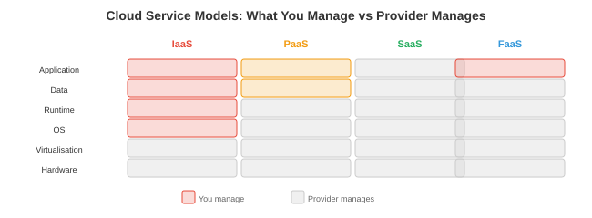

Cloud Computing¶
Cloud computing 按需提供 ML 工作负载所需的基础设施，无需自持硬件。本文涵盖服务模型、主要 cloud 提供商、container 与 Kubernetes、存储、cloud 网络、serverless 计算、成本管理以及基础设施即代码
- 训练一个前沿 model 需要数千块 GPU 运行数月。没有初创公司会自行拥有这些硬件。Cloud computing 允许你按小时租用，训练时扩容，inference 时缩容，只为实际使用量付费。对于任何在笔记本电脑之外构建 ML 系统的人来说，理解 cloud 基础设施至关重要。
Cloud 服务模型¶

- Cloud 服务按提供商管理程度分层：
| 模型 | 你管理 | 提供商管理 | 示例 |
|---|---|---|---|
| IaaS（基础设施） | 操作系统、运行时、应用 | 硬件、虚拟化、网络 | AWS EC2、GCP Compute Engine |
| PaaS（平台） | 应用、数据 | 操作系统、运行时、扩展、打补丁 | AWS SageMaker、GCP Vertex AI |
| SaaS（软件） | 无（直接使用） | 一切 | OpenAI API、Weights & Biases |
| FaaS（函数） | 单个函数 | 其余一切 | AWS Lambda、GCP Cloud Functions |
- 对于 ML：大多数团队混合使用。IaaS 用于自定义训练（对 GPU 实例完全控制），PaaS 用于托管训练和 serving（SageMaker、Vertex AI 处理编排），SaaS 用于工具（W&B 用于实验追踪，OpenAI API 用于基线对比）。
主要提供商¶
AWS（Amazon Web Services）¶
- 最大的 cloud 提供商（市场份额约 32%）。核心 ML 服务：
- EC2：虚拟机。GPU 实例：p4d（A100）、p5（H100）、g5（A10G 用于 inference）。
- S3：对象存储。存储数据集和 model 权重的标准。容量几乎无限，约 $0.023/GB/月。
- SageMaker：托管 ML 平台。处理训练、超参数调优、deployment 和监控。
- EKS：托管 Kubernetes。
- Lambda：serverless 函数。不适合 GPU 工作负载，但对预处理和编排有用。
GCP（Google Cloud Platform）¶
- Google 的 cloud（市场份额约 11%）。核心 ML 服务：
- Compute Engine：虚拟机。GPU 实例支持 A100、H100。TPU VM 提供 TPU 访问。
- GCS：对象存储（类似 S3）。
- Vertex AI：托管 ML 平台。原生支持 JAX/TPU。
- GKE：托管 Kubernetes（最成熟的 K8s 产品，因为 Google 创建了 Kubernetes）。
- Cloud TPU：GCP 独有。v5e 和 v5p 用于大规模训练。
Azure（Microsoft）¶
- Microsoft 的 cloud（市场份额约 23%）。核心 ML 服务：
- Azure VM：GPU 实例支持 A100、H100。
- Azure Blob Storage：对象存储。
- Azure ML：托管 ML 平台。
- AKS：托管 Kubernetes。
- OpenAI Service：通过 Azure API 独家访问 OpenAI model。
Container 与 Kubernetes¶
- 我们在第 13 章（操作系统）从概念层面介绍了 container（Docker）和 Kubernetes，在第 15 章（deployment）从实践层面进行了介绍。这里关注 cloud 特定的模式：
ML 中的 Kubernetes¶
-
Kubernetes（K8s） 在规模化环境中编排 container。核心概念：
-
Pod：最小的可部署单元。包含共享网络和存储的一个或多个 container。一个 model serving pod 可能包含：model server container + 用于指标收集的 sidecar container。
-
Deployment：管理一组相同的 pod。指定期望的副本数量。若某个 pod 崩溃，K8s 自动创建替代 pod。
-
Service：一组 pod 的稳定网络端点。client 连接到 service；K8s 路由到健康的 pod。类型：ClusterIP（内部）、NodePort（通过节点端口对外）、LoadBalancer（通过 cloud LB 对外）。
-
StatefulSet：类似 Deployment，但用于有状态工作负载。每个 pod 有持久标识和稳定存储。用于数据库和分布式训练（每个 worker 需要稳定标识进行通信）。
-
DaemonSet：在每个节点上运行一个 pod。用途：监控 agent（Prometheus node exporter）、日志收集器（Fluentd）、GPU 设备插件（NVIDIA device plugin）。
-
-
K8s 中的 GPU 调度：NVIDIA device plugin 将 GPU 作为 K8s 资源暴露。Pod 申请 GPU：
- K8s 将 pod 调度到有 2 块可用 GPU 的节点上。这就是 cloud ML 平台为训练和 inference 分配 GPU 的方式。
自动扩缩容¶
-
水平 Pod 自动扩缩（HPA）：根据指标（CPU 使用率、请求速率、自定义指标如 GPU 利用率或队列深度）扩缩 pod 数量。
-
集群自动扩缩器：扩缩节点数量。若因节点不足导致 pod 无法调度，集群自动扩缩器从 cloud 提供商申请新虚拟机。当节点利用率低时，则排空并终止它们。
-
KEDA（Kubernetes Event-Driven Autoscaling）：基于外部事件源（Kafka 队列深度、HTTP 请求速率）扩缩。非常适合 inference：请求队列增长时扩容 model server，队列为空时缩容。
存储¶
| 类型 | 特性 | 使用场景 | 示例 |
|---|---|---|---|
| 块存储 | 低延迟，挂载到单台 VM | 操作系统磁盘、数据库 | AWS EBS、GCP Persistent Disk |
| 对象存储 | 容量无限，HTTP 访问 | 数据集、model 权重、日志 | AWS S3、GCS、Azure Blob |
| 文件存储 | 跨 VM 共享，POSIX | 共享训练数据 | AWS EFS、GCP Filestore、NFS |
| 数据湖 | 读时 schema，原始数据 | 分析、feature 工程 | Delta Lake、Iceberg、Hudi |
-
对于 ML 训练：数据集存储在对象存储（S3/GCS）中。训练脚本从对象存储将数据读入 RAM。对于需要快速随机访问（乱序数据加载）的场景，可选择：(1) 训练前将数据集下载到本地 SSD；(2) 使用高吞吐量文件系统（Lustre、FSx）；(3) 使用能高效流式传输和缓存的数据加载库（WebDataset、FFCV）。
-
Model 权重：存储在带版本控制的对象存储中。FP16 格式的 70B model 约 140 GB。以 1 GB/s 从 S3 加载需约 2.5 分钟。在本地 SSD 上缓存可减少 inference 的冷启动时间。
Cloud 网络¶
-
VPC（Virtual Private Cloud）：cloud 内部的隔离网络。你的虚拟机、数据库和服务在 VPC 内通信。外部流量通过 load balancer 或 gateway 进入。
-
子网（Subnet）：将 VPC 划分为多个段。公共子网可访问互联网（供 API server 使用）。私有子网不可以（供数据库、GPU worker 使用）。这是网络层面的最小权限安全原则。
-
安全组（AWS）/ 防火墙规则（GCP）：控制允许哪些流量。"允许来自任意地址的入站 HTTP 80 端口。只允许来自我的 IP 的入站 SSH 22 端口。其余全部拒绝。"安全组配置错误是 cloud 安全事件的头号原因。
-
Service mesh（Istio、Envoy）：管理 K8s 内部的服务间通信。提供：mTLS 加密（每次服务间调用都加密）、流量路由（A/B 测试：将 10% 的流量路由到新 model）、重试、超时、断路以及可观测性（哪个服务调用了哪个，耗时多少）。
Serverless¶
-
Serverless（AWS Lambda、GCP Cloud Functions）：你上传一个函数，cloud 提供商在触发时运行它。无需管理 server，无需配置扩缩容。按调用次数付费（通常每 100 万次调用 $0.20 + 计算时间）。
-
冷启动：一段时间不活跃后的首次调用耗时更长（提供商需要分配 container 并加载你的代码）。冷启动时间为 0.5-5 秒，使 serverless 不适合延迟敏感的 ML inference。
-
对于 ML：serverless 适用于：预处理（将图片发送到 model 前先调整大小）、后处理（格式化 model 输出、发送通知）、编排（新数据到达时触发训练流水线）以及轻量级 inference（小型 model 且可接受冷启动）。
-
Serverless 不适用于：GPU inference（大多数 serverless 平台不支持 GPU）、长时间运行的训练任务（Lambda 有 15 分钟超时限制）或有状态服务（调用间无持久状态）。
成本管理¶
-
Cloud 成本是 ML 团队最大的运营顾虑。一块 H100 实例约 $8/小时。64 GPU 训练运行约 $500/小时。一个月的训练运行约 $360,000。成本优化是工程问题，不是财务问题。
-
Spot/抢占式实例：以 60-90% 折扣出售的闲置 cloud 容量。提供商可在 30 秒到 2 分钟内收回它们。适用于：容错训练（频繁设置检查点，在新实例上恢复）、批量 inference、数据预处理。不适用于：延迟敏感的 serving（中断 = 停机）。
-
预留实例：承诺使用 1-3 年以换取 30-60% 折扣。适用于：已知基线负载的稳态 inference serving。
-
自动扩缩容：高峰时段扩容，夜间/周末缩容。一个高峰需要 10 块 GPU、夜间只需 2 块 GPU 的 model server，通过自动扩缩容与全天运行 10 块 GPU 相比可节省约 60%。
-
规格匹配（Right-sizing）：不要为一个在 A10G 上运行良好的 7B model 使用 H100。让 GPU 与工作负载匹配。使用性能分析（第 16 章）确定最合适的 GPU。
-
存储成本：对象存储便宜（S3 标准每 GB 每月 $0.023），但会累积。一个团队存储每个训练检查点（每个 10 GB，每次实验 100 个，共 50 次实验）会积累 50 TB = $1,150/月。设置生命周期策略自动删除旧检查点。
多区域 Deployment¶
-
对于全球 ML 系统（为全球用户服务），单区域部署意味着距离较远的用户延迟高（东京用户访问美国 server 增加约 150ms 网络往返时间），且存在单点故障（区域宕机则整个服务下线）。
-
多区域模式：
-
主动-被动（Active-passive）：一个主区域处理所有流量。一个备用区域保持热待机（已复制数据，随时可以接收流量）。主区域故障时，DNS 切换到备用区域。故障切换期间停机时间：30 秒到数分钟。
-
主动-主动（Active-active）：两个区域同时处理流量。用户被路由到最近的区域。两个区域都有最新数据（异步或同步复制）。单区域故障时无停机——流量自动重路由。
-
-
数据复制：难点所在。Model 权重可轻松复制（复制到每个区域的 S3）。feature store 数据必须在可接受的时效性内复制。用户数据可能有数据驻留要求（GDPR：欧洲用户数据必须留在欧洲）。
-
GPU cloud 定价对比（近似值，2026 年）：
| GPU | AWS | GCP | Azure | 典型用途 |
|---|---|---|---|---|
| A10G（24 GB） | $1.00/小时（g5） | $0.90/小时 | $0.90/小时 | 小型 model inference |
| A100（80 GB） | $4.10/小时（p4d） | $3.70/小时 | $3.40/小时 | 训练、大型 inference |
| H100（80 GB） | $8.00/小时（p5） | $7.50/小时 | $7.00/小时 | 前沿 model 训练 |
| TPU v5e | 不可用 | $1.20/小时 | 不可用 | 大规模 JAX 训练 |
- Spot/抢占式定价通常比上述价格低 60-70%。价格因地区和可用性而异。
基础设施即代码¶
-
IaC 将基础设施（虚拟机、网络、数据库、K8s 集群）定义在受版本控制的配置文件中。不再点击 AWS 控制台的按钮，而是编写描述你需要什么的代码，由工具来创建它。
-
Terraform（HashiCorp）：标准 IaC 工具。支持所有主要 cloud 提供商。声明式：你描述期望状态，Terraform 决定如何创建/修改/删除以达到该状态。
# main.tf — 为 inference 创建 GPU 虚拟机
resource "aws_instance" "model_server" {
ami = "ami-0abcdef1234567890" # Deep Learning AMI
instance_type = "g5.xlarge" # A10G GPU
tags = {
Name = "model-server-prod"
}
}
resource "aws_s3_bucket" "model_weights" {
bucket = "my-model-weights-prod"
versioning {
enabled = true
}
}
terraform init # 下载提供商插件
terraform plan # 显示将发生的变更
terraform apply # 创建基础设施
terraform destroy # 销毁全部资源
-
IaC 的意义：可复现性（从代码重建完整基础设施）、可审计性（git 历史显示谁做了什么变更）、灾难恢复（使用相同配置在不同区域重建）以及环境一致性（开发、预发布和生产使用相同模板，只是参数不同）。
-
Pulumi：类似 Terraform，但使用真正的编程语言（Python、TypeScript、Go）而非 HCL。当基础设施逻辑复杂时（条件判断、循环、动态配置）很有用。